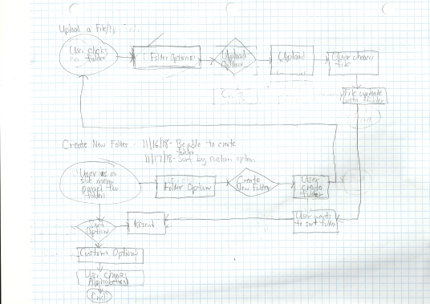
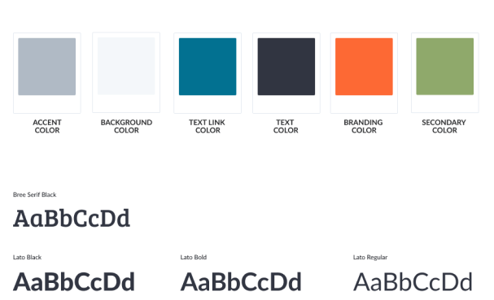

About
Resume
Contact

ClassUp is a cloud storage website for teachers and their students with easy access to upload files, organize files and folders, and chat with other users. ClassUp’s focus on education and interaction between students and teachers in an increasingly crowded cloud storage market.
The Problem
The client is a longtime client who wanted to start an app in the growing cloud storage/organization project. They wanted to have the basic features of a cloud storage app and include a collaboration tool like connecting with others in real time. I was challenged to think, create, and design a cloud storage app that would incorporate all those features for a unspecific market.
The Solution
Most users also use their cloud storage app for educational purposes according to our survey. In the competitive analysis, I took a look at productivity cloud storage apps and their color schemes. Based on the user survey, I then focused our cloud storage ideas on the needs of the education sector to create ClassUp. I sketched user flows and initial wireframes. I created branding and the name ClassUp to make it unique yet playful. I desgined the high fidelity wireframes, and these needed to be tested.Using insights gained from preference testing and two rounds of usability testing, I was able to connect ClassUp to the users.

 Competitive Analysis of Productivity-Based Websites
Competitive Analysis of Productivity-Based Websites
I found an opportunity for a niche competitor to compete with them. a niche competitor would be an all-in-one hub for internal communication and data storage for teams and companies at large while still being able to serve a wide variety of users who need to organize their notes and projects and have the capability of visual organization. I also took a look at their color schemes and I aimed for a playful and fun aesthetic.
As part of the user research process in planning for the future cloud storage app, a survey was created to understand what’s important to users when it came into using their current cloud storage apps. This was posted on social media, the Bloc student channel, and online survey websites. The survey received 21 responses.
Learnings:
Respondents frequently save their photos, documents, and images as well as videos and notes. Simplicity and ease of use, sharing files, and uploading files are the most important cloud storage website features. Sharing files and collaborating with others were not as highly valued. Many users did not feel their app was missing anything and would not change one feature of their app. For those who felt otherwise, they mentioned the UX of their app could be better as well as more technical issues of their app. Over 75% of the 21 respondents were between the ages of 18-34. About half of the respondents were involved in education. Since most users also use their cloud storage app for educational purposes and our competitive analysis looked at note-taking cloud storage apps, the focus of our cloud storage app was for the education sector.

Based on the survey results, I identified two personas: a teacher persona and a student persona. The personas show their motivations, goals, and frustrations with their cloud storage app. The teacher wants to be able to easily access their files, organize them however they see fit, and have the ease of moving around their files. The student wants to collaborate with others and have a better interface of their cloud storage app.
LearningsMany respondents were satisfied with the features of their current cloud storage app. The important features of their app would be integrated into the cloud storage app. I kept their suggestion of simple UX design in mind while I developed the user personas. I referred to the teacher persona throughout the process since they would be the ones to have more administrative controls over the cloud storage website.

The user stories were then created from the personas and the survey results. The user stories showed succinct descriptions of the requirements from the end-user’s point of view.
LearningsLearnings:These had to be reiterated several times with a mentor. Eventually, the user stories showed the basic features of organizing, uploading, registering, and onboarding. While time-consuming, the user stories offered insight into connecting the product to the user. Identifying this early allowed me to shift focus from creating many user stories to a simple cloud storage experience.
 Initial User Flows of Uploading, Organizing, and SavingThe user stories informed the user flows, showing nearly the same processes for teachers and students with the teachers having certain admin controls. The user flows identified the key actions of uploading, organization, and saving within the website and the screens. The teacher and student user flows are similar except that the teachers have more control over public and private settings for assignments and discussions.
Digital User Flows of Uploading, Organizing, and SavingInitial wireframe sketches showed the ease of sliding menus and the chat function.
LearningAfter reviewing the user survey results, I thought it would be best to create a cloud storage website. I thought it would be too much to handle with sliding menus plus a chat feature. The website would have instead a side menu showing separate sections for files, folders, and classes with assignments.
 Initial Wireframe Sketch of Sliding Menu for Cloud Storage Website
Initial Wireframe Sketch of Sliding Menu for Cloud Storage Website
Black and white wireframes for teachers and students were created to see how the UI and the information architecture would work for the website. At this stage, I created screens for onboarding, saving, and organizing.
LearningsI added more changes to the wireframes from user testing. In the first round of user testing, one tester, who is a teacher recommended adding a place for teachers to add classes due to security reasons, which I later added to the profile settings in the high fidelity wireframes. Another tester pointed out the options to stay logged in and log out.
Black and White Prototype Black and White Wireframe of Main Teacher Navigation Menu
ClassUp is meant to be used as an easy, engaging cloud storage for students and educators to use. The ideas came from the majority of the survey respondents being students or being involved in the education field. They wanted to have an easier, more attractive user interface for them to upload their files and store them. I generated ideas by mind-mapping and associating words with ‘education’. Eventually, I came up with the current brand name ClassUp. ClassUp needed to be identified by a symbol of bright ideas and open communication. A lightbulb could not be a better expression of that ethos. I wanted this cloud storage platform to be fun and usable even for those who are not as tech-savvy and want convenience.
Logo Sketches, Mindmapping, and Word Association List
The brand type for the logo is Bree Serif, so it would have a tone of seriousness alongside the complementary font and text font, Lato. Orange was chosen as the primary color to stand out among a crowd of education tech brands that use blue as their primary colors. Green would be used for the side menu for ease of understandability.
The images of students and teachers show the optimism and trustworthiness of the brand. These were used throughout the ClassUp landing page.


.png) Teacher’s Assignment Page and the Chat Option
Teacher’s Assignment Page and the Chat Option
Using my ClassUp branding, I created high fidelity screens to create a realistic experience of the ClassUp website. This round of high fidelity mockups included the profile settings, edit assignment settings, and the collaboration options. The screens were then used to encourage more user feedback through preference testing and user testing. I gained more feedback on my high fidelity mockups from my mentor who suggested adding avatars to the students’ names. I thought that was a great idea. I also came up with the ideas to see about the different types of confirmation popups and edit assignment popup. Testers chose the main navigation page with avatars. However, testers werey divided about the confirmation popups and edit assignment screens. I used the right screen with the confirmation popup with the greyed background. The edit assignment screen with more options was used for the final prototypes.

For the second round of user testing, I wanted to test the chat settings and the upload process through the assignment page. I created a prototype for the student tester and a prototype for the two teacher testers. The testers were impressed by the overall usability of the website, with one pointing out that they liked the fun colors, the chat options for students and teachers, and the ease of use as compared to Google Classrooms. One tester did recommend adding color-coded assignments and an all-in-one dashboard without tabs.
After feedback from other mentors, the high fidelity mockups were updated with slight changes: I aligned the list to the left in the side menus of my main website and created uniform iconography and buttons. I also had more feedback on my landing page for bigger typey and a better structured information architecture of the landing page from the first page to the last page.
.png) Teacher’s Assignment Upload Popup
Teacher’s Assignment Upload Popup 
Research is crucial:The initial amount of user research and time it takes to undertake a project widened my perspective on UX design. Through a competitive analysis, I was intrigued about more niche cloud storage productivity apps. The user survey gained traction from a number of responses from students and educators, which resulted in the idea of an education-oriented cloud storage website.
Balancing iterative testing and business goals in UX Design:Handling user feedback from the teachers during iterative user testing while maintaining the scope of the project was a delicate balance. I learned to focus on the project’s business goals early on from mentor feedback when it came to user stories and user flows. I overcame it by including certain feedback such as adding courses while maintaining the business goals and scope of the project.
User feedback is essential to consistent redesigns: Conducting user testing at various stages of the project helped me see how to create a delightful end-user experience. The testers enjoyed the playfulness and ease-of-use with the ClassUp website. Some of the other feedback included adding a grading section and a text editor for direct editing with assignments. This can be added to a future version of ClassUp.
If I were to do this differently with this project, I would have managed my time better with putting together the wireframes and creating the mockups since I understand that there are times that the turnaround for a project could be much earlier than usual. Currently, I’m learning on creating more effective surveys and reading more case studies for my future projects.